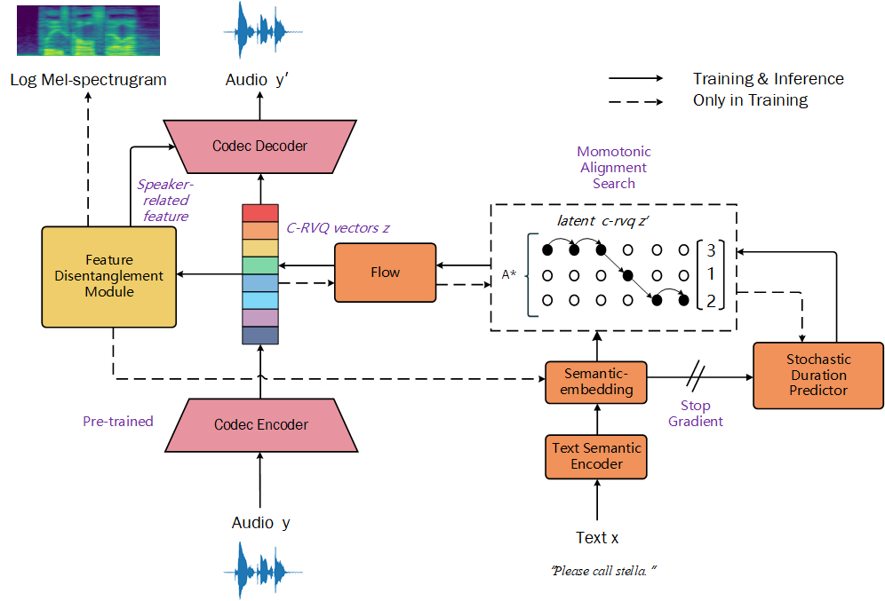

Zero-TTS: Zero-Shot Speaker Adaptive Speech
Synthesis Based on Neural C-RVQ Codec
China University of Mining and Technology
Intelligent Information Processing Laboratory
Zero-TTS: Zero-Shot Speaker Adaptive Speech
Synthesis Based on Neural C-RVQ Codec
China University of Mining and Technology
Intelligent Information Processing Laboratory
Abstract
Speaker adaptive speech synthesis offers a wide range of application in human-computer interaction scenarios, AI-generated creations, and news broadcast. Existing speaker adaptation methods predominantly focus on supervised fine-tuning. However, when updating network parameters is not allowed or the data for fine-tuning is severely insufficient, such methods become ineffective. Therefore, it is crucial to develop a zero-shot speaker adaptive model capable of generating realistic speech without fine-tuning. In this paper, we propose a zero-shot speech synthesis system, Zero-TTS, leveraging a neural speech codec, feature disentanglement module, and a feature predictor to synthesize speech of unseen speakers. Specifically, we design a speech codec network which compresses speech into continuous residual vector-quantized (C-RVQ) vectors as intermediate representations. Despite their significant compression, the C-RVQ vectors still possess the potential to be reconstructed into high-fidelity speech. To achieve text-to-speech synthesis, C-RVQ vectors are predicted with a flow-based network from the text input. Furthermore, a feature disentanglement module is utilized to extract speaker-related information through the comparison between semantic information from text and that from speech. Due to the independence of speaker identity information during training step, the disentanglement module demonstrates effectiveness across diverse data distributions. Finally, the predicted C-RVQ vectors from text input, along with the speaker-related features from the prompt speech, are combined in the codec decoder to reconstruct the speech for the target speaker. We train our model on the widely used LibriTTS dataset and validate the effectiveness on both in-domain test set and out-of-domain data. Experimental results indicate that Zero-TTS exhibits the SOTA preformance within networks of similar parameter magnitudes. The SMOS to measure speaker similarity reaches 3.55 : 2.31, higher than the baseline YourTTS.
Fig: The architecture of the proposed Zero-TTS
| Text | Prompt | GroundTruth | Baseline | Infer |
|---|---|---|---|---|
| Please call stella. | ||||
| He would need that machine. | ||||
| If that is the case, it is a breakthrough. | ||||
| Ask her to bring these things with her from the store. | ||||
| Our mother is very worried. | ||||
| Thankfully, no one in bus is too badly hurt. | ||||
| The game today is certainly different. | ||||
| The music in the street hasn't changed at all. | ||||
| He didn't want me to leave the house. | ||||
| Last week, he was taken into the hospital. |